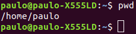
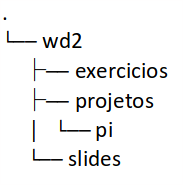
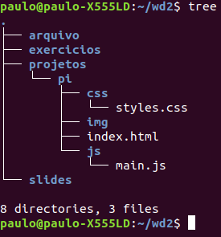

Resolução e análise à ficha de trabalho nº 1
Documento pdf associado: Ficha de trabalho nº 1
A primeira ficha de trabalho realizada na cadeira de Web Design II teve por objetivo
colocar em prática a tema falado em aula anteriormente, a
Interface da linha de comandos e os vários comandos que poderão ser executados
de modo a atingir os objetivos desejados utilizando apenas o teclado como auxílio. Irei em seguida
analisar com detalhe a minha resolução da ficha e disponibilizar os comandos que utilizei a justificação
para a utilização dos mesmos.
Exercício 1: Abra a opção no terminal. Indique a pasta em que se encontra.
Resolução:
- Utilizei o comando "pwd" no terminal, de modo a obter a pasta em que me encontrava,
obtendo como resultado o meu diretório "/home" ("/home/paulo").

Exercício 2: Navegue para a pasta home do utilizador e crie a seguinte árvore de diretórios:

Resolução:
Comandos que utilizei, por ordem:
- $ mkdir wd2
- $ cd wd2
- $ mkdir exercicios
- $ mkdir projetos/pi/
- $ mkdir slides
Criei a árvore de diretórios pedida usando os comandos acima mencionados e,
com isso, concluí o exercício proposto.
Exercício 3: Altere o nome do diretório 'exercicios' para fichas
e copie este documente para esse diretório. De seguida crie um novo diretório em projetos/
com o nome cli.
Resolução:
Comandos que utilizei, por ordem:
- $ mv exercicios fichas
- $ cd ~
- $ cd /Downloads
- $ cp Ficha \1.pdf ~/wd2/fichas
- $ cd ~
- $ cd wd2
- $ cd projetos
- $ mkdir cli
Usando o comando "mv" mudei o nome do diretório "exercicios" para "fichas";
De seguida procedi a mudar o diretório atual para o diretório "/Downloads",
que continha a ficha de trabalho após a ter descarregado;
Usei o comando "cp" de modo a copiar a dita ficha e coloquei-a no diretório
das fichas, como se consta no comando utilizado;
Por fim, mudei para o diretório "projetos" e lá criei um novo diretório denominado
de "cli", tal como constava no enunciado.
Exercício 4: Crie os seguintes diretórios e ficheiros:
- a. ~/wd2/arquivo
- b. ~/wd2/projetos/pi/css/styles.css
- c. ~/wd2/projetos/pi/js/main.js
- d. ~/wd2/projetos/pi/img/
- e. ~/wd2/projetos/pi/index.html
Resolução:
Comandos que utilizei, por ordem:
- $ mkdir arquivo
- $ mkdir /projetos/pi/css
- $ touch /projetos/pi/css/styles.css
- $ mkdir /projetos/pi/js
- $ touch /projetos/pi/js/main.js
- $ mkdir /projetos/pi/img/
- $ touch /projetos/pi/index.html
Com os comandos acima descritos procedi à resolução do exercício 4, criando
os diretórios e ficheiros pedidos;
Destaque para a introdução do comando "touch" neste exercício. Sendo que
este trata-se do equivalente ao comando "mkdir", mas não para criar diretórios
e sim ficheiros;
Nota também para o facto de ter resolvido o exercício sem ter que alternar o meu
diretório (raíz da pasta wd2), como se pode notar pelos caminhos utilizados nos comandos.
Uma forma muito mais versátil e flexível de controlar a criação de conteúdo a partir
da linha de comandos. De resto, já havia feito algo muito parecido na resolução do exercício
2.
Exercício 5: Qual é a árvore de diretórios e ficheiros atual para o ~/wd2/?
Resolução:
Após instalação do pacote "tree" através do comando "sudo apt-get install tree",
procedi à utilização do seguinte comando:
O comando utilizado demonstrou a árvore de diretórios e ficheiros atual, concluíndo
assim o exercício 5:

Exercício 6: Copie os múltiplos diretórios e ficheiros do projeto pi/ para cli/
Resolução:
Comando que utilizei:
Destaque na resolução deste exercício para duas notas: a utilização da opção
-r, que significa recursively e permite copiar ficheiros
de um diretório inteiro para outro, em conjugação com o denominado wildcard
*, que significa simplesmente "tudo".
A simbiose entre os dois comandos acima descritos permitiu construir o comando que tornou possível
a resolução do exercício 6 ao copiar todos os ficheiros e diretórios da origem (/pi)
para o destino (/cli).
Exercício 7: Inicialize um repositório local em /cli
Resolução:
Comando que utilizei:
Utilizando o comando "git init", em junção com diretório onde era pretendido
que se iniciasse o repositório, o exercício 7 ficou solucionado.
Exercício 8: Configure o repositório localmente. Deve conter o seu nome e email.
Resolução:
Comandos que utilizei, por ordem:
- $ git config user.name "Paulo Cunha"
- $ git config user.email "paulo_cunha1997@outlook.pt"
Procedi desta forma, com estes dois comandos, à configuração do repositório git localmente,
utilizando como argumentos o nome que pretendia como username e o meu email.
Exercício 9: Faça o versionamento inicial.
Comandos que utilizei, por ordem:
- $ git add *
- $ git commit -m "Commit inicial"
Utilizando estes dois comandos associados ao git e o seu versionamento,
concluí o exercício 10 com sucesso;
Primeiro utilizei "git add *" de modo a adicionar todos os ficheiros do diretório
wd2 e colocá-los no modo "tracked" do git;
Em seguida procedi ao "commit" inicial com uma mensagem ilustrativa do processo,
concluíndo assim o versionamento e a ficha de trabalho nº 1.
Considerações finais: Com a resolução desta ficha de trabalho consegui
ao mesmo tempo apreender conteúdos muito importantes no que toca ao manuseamento e controlo
da flow de um projeto através da linha de comandos, tal como o versionamento inicial
do mesmo através do git. Foram vários os comandos e pequenos "wildcards"
que me ajudaram a tirar o melhor proveito desta ficha de trabalho associada à interface da linha
de comandos.